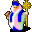

Jolnor¶Where to find Jolnor: Vilegard: vilegard_chapel
{ .sprite }
| Type | NPC (can be spoken to; cannot be attacked) |
| Role | Shopkeeper; starts Kaori's errands, Spies in the foam, Uncertain cause |
| Found in | Vilegard |
| Entry ID | jolnor |
| Introduced | v0.7.0 or earlier |
Shop stock¶
| Item | Chance | Qty |
|---|---|---|
| Minor potion of health | 100% | 10 |
| Regular potion of health | 100% | 10 |
| Major potion of health | 100% | 10 |
| Defender's stone | 100% | 1 |
| Shielding necklace | 100% | 1 |
| Ring of damage +3 | 100% | 1 |
| Defender's ring | 100% | 1 |
| Ring of damage +6 | 100% | 1 |
| Ring of the guardian | 100% | 1 |
| Robe of the protector | 100% | 1 |
Quests¶
- Kaori's errands: stage 5
- Shadows: stages 110, 120
- Spies in the foam: stages 10, 30
- Trusting an outsider: stages 20, 30
- Uncertain cause: stage 10
Dialogue simulator¶
Set the quest stages, items and other conditions that apply to your game, then start the conversation with Jolnor. The simulator applies the game's own rules: it performs the same silent checks, offers only the options that would be shown in the game, and applies their effects (quest stages, items handed over, rewards) as the conversation proceeds.
Rules verified against v0.8.18 game code (ConversationController.java) and dialogue data.
Dialogue (61 lines)
What the dialogue says, exactly as in the game files. Lines are listed once; links jump to the line a choice leads to.
jolnor_select_1 (silent check: the first matching branch below is taken)
- branch 1 (if reached stage 30 of Trusting an outsider) → jolnor_default_3
- branch 2 (if reached stage 20 of Trusting an outsider) → jolnor_default_2
- branch 3 → jolnor_default
jolnor_default_3 Jolnor: “Walk with the Shadow my friend.”
- “Can you tell me again what this place is?” → jolnor_chapel_1
- “I require healing. Can I see what items you have available?” → jolnor_shop_1
- “I need some help finding out who is responsible for casting a Shadow spell that causes a person to become noticeable.” (if reached stage 50 of Troubling times; NOT reached stage 70 of Troubling times) → tt_jolnor_10
- “What blessings can you provide?” (if reached stage 100 of Shadows; NOT reached stage 110 of Shadows) → dds_jolnor_10
- “About Fatigue and Life drain ...” (if reached stage 110 of Shadows; NOT reached stage 120 of Shadows) → dds_jolnor_100
- “The blessing has worn off too early. Could you give it again?” (if reached stage 110 of Shadows; NOT reached stage 160 of Shadows; NOT affected by shadowsleep) → dds_talion_130
jolnor_default_2 Jolnor: “Walk with the Shadow my child.”
- “Can you tell me again what this place is?” → jolnor_chapel_1
- “Let's talk about those missions for gaining trust that you talked about earlier.” → jolnor_quests_1
- “I require healing. Can I see what items you have available?” → jolnor_shop_1
jolnor_default Jolnor: “Walk with the Shadow my child.”
- “What is this place?” → jolnor_chapel_1
- “I was told to talk to you about why everyone in Vilegard is suspicious of outsiders.” (if reached stage 10 of Trusting an outsider) → jolnor_suspicious_1
jolnor_chapel_1 Jolnor: “This is Vilegard's place of worship for the Shadow. We praise the Shadow in all its might and glory.”
- “Can you tell me more about the Shadow?” → jolnor_shadow_1
- “I require healing. Can I see what items you have available?” → jolnor_shop_1
- “Whatever. Just show me your goods.” → jolnor_shop_1
jolnor_shop_1 (silent check: the first matching branch below is taken)
- branch 1 (if reached stage 30 of Trusting an outsider) → shop opens
- branch 2 → jolnor_shop_2
tt_jolnor_10 Jolnor: “Excuse me? I don't know what you want from me.”
- “Never mind.” → jolnor_default_3
dds_jolnor_10 Jolnor: “I don't provide any blessings.”
- “But Talion said that you could.” → dds_jolnor_20
dds_jolnor_100 Jolnor: “Well, ask away.”
- “Can you also give 'blessings' of Fatigue and Life Drain” → dds_jolnor_110
dds_talion_130 Jolnor: “That's no problem at all.”
- “I'm glad about that.” → dds_talion_132
jolnor_quests_1 Jolnor: “I would suggest you help Kaori, Wrye and me to gain our trust.”
- “About that guard outside the Foaming Flask tavern...” → jolnor_guard_select
- “About those tasks...” → jolnor_quests_2
- “Never mind, let's get back to those other topics.” → jolnor_select_1
jolnor_suspicious_1 Jolnor: “Suspicious? No, I wouldn't call it suspicion. I would rather call it that we are careful nowadays.”
- Next → jolnor_suspicious_2
jolnor_shadow_1 Jolnor: “The Shadow protects us from the dangers of the night. It keeps us safe and comforts us when we sleep.”
- Next → jolnor_select_1
jolnor_shop_2 Jolnor: “I don't trust you enough yet to feel comfortable trading with you.”
- “Why are you that suspicious?” → jolnor_suspicious_1
- “Very well.” → jolnor_select_1
dds_jolnor_20 Jolnor: “Oh, you mean Shadow Sleepiness?”
- “Yes.” → dds_jolnor_22
dds_jolnor_110 Jolnor: “Borvis can't even manage those?! How unworthy!”
- “Well, could you?” → dds_jolnor_112
dds_talion_132 Jolnor: “It'll just cost you another 300 gold pieces.”
- “Sure, I am wealthy enough.” (if have 300 gold) → dds_jolnor_62
- “I don't have that much with me. I'll be back.” (if NOT have 300 gold) → conversation ends
jolnor_guard_select (silent check: the first matching branch below is taken)
- branch 1 (if reached stage 30 of Spies in the foam) → jolnor_guard_completed
- branch 2 → jolnor_guard_1
jolnor_quests_2 Jolnor: “Yes, what about them?”
- “What was I supposed to do again?” → jolnor_suspicious_2
- “I have done all the tasks you asked me to do.” (if reached stage 30 of Spies in the foam) → jolnor_quests_select_1
- “Never mind, let's get back to those other topics.” → jolnor_select_1
jolnor_suspicious_2 Jolnor: “In order to gain the trust of the village, an outsider must prove that they are not here to cause trouble.”
- “Sounds like a good idea. There are a lot of selfish people out there.” → jolnor_suspicious_3
- “That sounds really unnecessary. Why not trust people in the first place?” → jolnor_suspicious_4
dds_jolnor_22 Jolnor: “So Talion still can't tell a blessing from a spell.”
- Next → dds_jolnor_24
dds_jolnor_112 Jolnor: “Of course I could, if I wanted to.”
- “If you say so.” → dds_jolnor_120
dds_jolnor_62 Jolnor: “Well, give me the 300 gold.”
- “Sure, here.” (if pay 300 gold) → dds_jolnor_70
jolnor_guard_completed Jolnor: “Yes, you dealt with him earlier. Thank you for your help.”
- Next → jolnor_quests_1
jolnor_guard_1 Jolnor: “Yes, what about him. Have you removed him yet?”
- “Yes, he will leave his post as soon as this shift is over.” (if reached stage 20 of Spies in the foam) → jolnor_guard_2
- “Yes, he is removed.” (if hand over 1× Feygard patrol ring) → jolnor_guard_2
- “No, but I am working on it.” → jolnor_gaintrust_14
jolnor_quests_select_1 (silent check: the first matching branch below is taken)
- branch 1 (if reached stage 20 of Kaori's errands) → jolnor_quests_select_2
- branch 2 → jolnor_quests_kaori_1
jolnor_suspicious_3 Jolnor: “Yes, right. You seem to understand us well, I like that.”
- “Is there anything I can do to gain your trust?” → jolnor_gaintrust_select
jolnor_suspicious_4 Jolnor: “We have learned from history not to trust outsiders, and you are an outsider. Why should we trust you?”
- “What can I do to gain your trust?” → jolnor_gaintrust_select
- “You are right. You probably should not trust me.” → conversation ends
dds_jolnor_24 Jolnor: “He never could.”
- “Now what?” → dds_jolnor_26
dds_jolnor_120 Jolnor: “There's one priest, Favlon, who can give you both. However, he went researching in the area west of Sullengard and hasn't been seen since.” — effects: sets stage 120 of Shadows, spawns monsters on nw_sullengard_1
- “West of Sullengard. Sigh.” → conversation ends
dds_jolnor_70 Dummy NPC: “Jolnor is chanting, murmuring, gesticulating.”
- “[Thinking to himself] He's probably just doing this to distract me so I can't figure out how to do it.” → dds_jolnor_80
jolnor_guard_2 Jolnor: “Very good. Thank you for your help.” — effects: sets stage 30 of Spies in the foam
- “No problem. Let's get back to those other tasks we talked about.” → jolnor_quests_2
jolnor_gaintrust_14 Jolnor: “Good. Report back to me when you are done.”
- Next → jolnor_gaintrust_15
jolnor_quests_select_2 (silent check: the first matching branch below is taken)
- branch 1 (if reached stage 90 of Uncertain cause) → jolnor_quests_completed
- branch 2 → jolnor_quests_wrye_1
jolnor_quests_kaori_1 Jolnor: “You still need to help Kaori with her task.”
- Next → jolnor_select_1
jolnor_gaintrust_select (silent check: the first matching branch below is taken)
- branch 1 (if reached stage 30 of Trusting an outsider) → jolnor_gaintrust_return_2
- branch 2 (if reached stage 20 of Trusting an outsider) → jolnor_gaintrust_return
- branch 3 → jolnor_gaintrust_1
dds_jolnor_26 Jolnor: “If Talion says - OK, it's yours for only 300 gold. Though it's not a blessing as such...”
- “Great!” (if pay 300 gold) → dds_jolnor_50
- “That is too much. I'd offer you 50 gold at the most.” → dds_jolnor_28
- “300? I have to get some gold first.” (if NOT have 300 gold) → conversation ends
dds_jolnor_80 Jolnor: “Here you go. Take it to Borvis with care.” — effects: applies condition shadowsleep, sets stage 110 of Shadows
- “Thank you. Bye.” → conversation ends
- “Please, I still have a question.” → dds_jolnor_100
jolnor_gaintrust_15 Jolnor: “So, in order to gain our trust here in Vilegard, I would suggest you help Kaori, Wrye and me.” — effects: sets stage 20 of Trusting an outsider
- “Thank you for the information. I will be back when I have something to report.” → conversation ends
jolnor_quests_completed Jolnor: “Good. You helped all three of us.” — effects: sets stage 30 of Trusting an outsider
- Next → jolnor_quests_completed_2
jolnor_quests_wrye_1 Jolnor: “You still need to help Wrye with her task.”
- Next → jolnor_select_1
jolnor_gaintrust_return_2 Jolnor: “With your help earlier, you have already gained our trust.”
- Next → jolnor_default_3
jolnor_gaintrust_return Jolnor: “As I said before, you have to help some people here in Vilegard to gain our trust.”
- Next → jolnor_quests_1
jolnor_gaintrust_1 Jolnor: “If you do us a favor, we might consider trusting you. There are three people I can think of that are influential here in Vilegard, that you should try to help.”
- Next → jolnor_gaintrust_2
dds_jolnor_50 Jolnor: “What do you want it for?”
- “Well, Borvis wanted it to break through a Shadow shield, as someone is misusing Shadow powers to the south of Stoutford.” → dds_jolnor_60
dds_jolnor_28 Jolnor: “Your choice. Come again, when you are wiser.”
jolnor_quests_completed_2 Jolnor: “I suppose that shows some dedication, and that we are ready to trust you now.”
- Next → jolnor_quests_completed_3
jolnor_gaintrust_2 Jolnor: “First, there is Kaori. She lives up in the northern part of Vilegard. Ask her if she wants help with anything.” — effects: sets stage 5 of Kaori's errands
- “OK. Talk to Kaori. Got it.” → jolnor_gaintrust_3
dds_jolnor_60 Jolnor: “Tsk! Tsk! Not strong enough, is he? Sending a kid to do a priest's duty?”
- Next → dds_jolnor_62
jolnor_quests_completed_3 Jolnor: “You have our thanks, friend. You will always find shelter here in Vilegard. We welcome you into our village.”
- Next → jolnor_select_1
jolnor_gaintrust_3 Jolnor: “Then there is Wrye. Wrye also lives up in the northern part of Vilegard. Many people here in Vilegard seek her advice on various things.”
- Next → jolnor_gaintrust_4
jolnor_gaintrust_4 Jolnor: “She recently lost her son in a tragic way. If you can gain her trust, you will have a strong ally here.” — effects: sets stage 10 of Uncertain cause
- “Talk to Wrye. Got it.” → jolnor_gaintrust_5
jolnor_gaintrust_5 Jolnor: “And last but not least, I have a favor to ask of you as well.”
- “What favor is that?” → jolnor_gaintrust_6
jolnor_gaintrust_6 Jolnor: “North of Vilegard is a tavern called the Foaming Flask. In my opinion, this tavern is a guard station in guise for Feygard.”
- Next → jolnor_gaintrust_7
jolnor_gaintrust_7 Jolnor: “The tavern is almost always visited by the Feygard royal guard of Lord Geomyr.”
- Next → jolnor_gaintrust_8
jolnor_gaintrust_8 Jolnor: “They are probably here to spy on us, since we are followers of the Shadow. Lord Geomyr's forces always try to make life difficult for us and the Shadow.”
- “Yes, they seem like troublemakers all around.” → jolnor_gaintrust_9
- “I am sure they have their reasons for doing what they do.” → jolnor_gaintrust_10
jolnor_gaintrust_9 Jolnor: “Right. Troublemakers indeed.”
- “What do you want me to do?” → jolnor_gaintrust_11
jolnor_gaintrust_10 Jolnor: “Yes, their reason is to make life miserable for us, I am sure.”
- “What do you want me to do?” → jolnor_gaintrust_11
jolnor_gaintrust_11 Jolnor: “My reports say that there is a guard stationed outside the tavern, to keep an eye on potential dangers.”
- Next → jolnor_gaintrust_12
jolnor_gaintrust_12 Jolnor: “I want you to make sure the guard disappears somehow. How you do that is purely up to you.” — effects: sets stage 10 of Spies in the foam
- “I am not sure I should upset the Feygard patrol guards. This could really get me into trouble.” → jolnor_gaintrust_13
- “For the Shadow, I will do as you ask.” → jolnor_gaintrust_14
- “OK, I hope this leads to some treasure in the end.” → jolnor_gaintrust_14
jolnor_gaintrust_13 Jolnor: “It's your choice. You can at least go check out the tavern and see if you find anything suspicious.”
- “Maybe.” → jolnor_gaintrust_15
Version history¶
| Version | Change |
|---|---|
| v0.7.0 | Present in v0.7.0 (earliest release tracked) |
| v0.7.2 | Dialogue: 11 lines changed |
| v0.8.13 | Dialogue: 1 line added, 1 line changed |
| v0.8.14 | Dialogue: 17 lines added, 1 line changed |
Verified against v0.8.18 and every earlier release back to v0.7.0 (game data compared release by release).
Technical information
| Entry ID | jolnor |
| Spawn group | jolnor |
| Loot table | shop_jolnor |
| Conversation | jolnor_select_1 |
| Faction | – |
| Movement | – |
| Icon | monsters_men2:8 |
| Defined in | res/raw/monsterlist_v068_npcs.json |
Raw data:
{
"id": "jolnor",
"name": "Jolnor",
"iconID": "monsters_men2:8",
"monsterClass": "humanoid",
"spawnGroup": "jolnor",
"phraseID": "jolnor_select_1",
"droplistID": "shop_jolnor"
}
Community notes¶
Written by players, not generated from game data. Observations: what players notice in-game · Lore: the in-world story · Trivia: real-world facts, references, development history · Theory / speculation: unconfirmed ideas; may just be unfinished content
Observations¶
No notes yet. Contributions are welcome: add a note.
Lore¶
No notes yet. Contributions are welcome: add a note.
Trivia¶
No notes yet. Contributions are welcome: add a note.
Theory / speculation¶
No notes yet. Contributions are welcome: add a note.
Data from v0.8.18